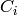
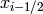

PyWENO notation
A grid over an interval [a, b] with N cells has N+1 cell
boundaries. The boundaries are denoted by
so that
The cells are denoted by
Python notation conventions
Throughout PyWENO:
- A quantity q that depends on the cell  is indexed as q[i-1].
- A quantity q that depends on the cell boundary at  is
indexed as q[i-1].
- The variables ql and qr denote the quantity q approximated
at the left and right of the cell. For example, ql[i-1]
is q approximated at the left boundary of .
- The variables qm and qp denote the quantity q approximated
at the cell boundaries from the left (minus) and right (plus). For
example, qm[i-1] is q approximated from the left at the
boundary .